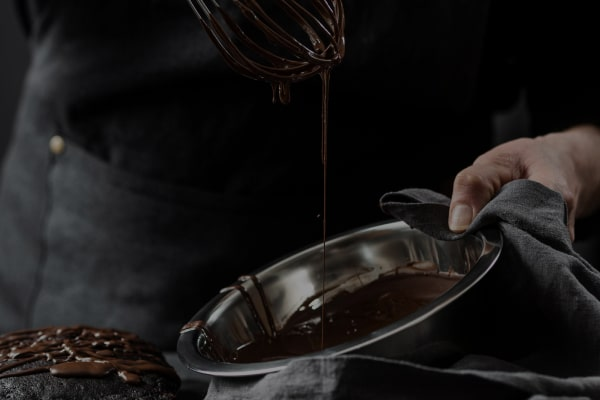

<section class="how-its-made section">
  <div class="how-its-made__container container">
    <h2 class="how-its-made__title section-title">
      hOW IT&rsquo;S <span class="section-title-span">made?</span>
    </h2>
    <div class="how-its-made__content">
      <div class="how-its-made__video-wrapper">
        <div class="how-its-made__thumb">
          <picture>
            <source
              srcset="
                ../img/how-its-made/desktop-how-its-made.jpg    1x,
                ../img/how-its-made/desktop-how-its-made@2x.jpg 2x
              "
              media="(min-width: 1200px)"
            />
            <source
              srcset="
                ../img/how-its-made/tablet-how-its-made.jpg    1x,
                ../img/how-its-made/tablet-how-its-made@2x.jpg 2x
              "
              media="(min-width: 768px)"
            />
            <source
              srcset="
                ../img/how-its-made/mobile-how-its-made.jpg    1x,
                ../img/how-its-made/mobile-how-its-made@2x.jpg 2x
              "
              media="(max-width: 767px)"
            />
            
          </picture>
        </div>
        <!-- <iframe
          src="https://www.youtube.com/embed/DISjdfkSjc8?controls=0"
          title="YouTube video player"
          frameborder="0"
          allow="accelerometer; autoplay; clipboard-write; encrypted-media; gyroscope; picture-in-picture; web-share"
          allowfullscreen
        ></iframe> -->
      </div>
      <div class="how-its-made__text-wrapper">
        <h3 class="how-its-made__subtitle">
          Try our chocolates today and discover the perfect balance of flavor
        </h3>
        <ul class="how-its-mate__list">
          <li class="list__item_how-its-mate">
            Heat the milk in a saucepan without bringing it to a boil. Add sugar
            and cocoa powder.
          </li>
          <li class="list__item_how-its-mate">
            At the same time, prepare a water bath. Melt the butter on it.
          </li>
          <li class="list__item_how-its-mate">
            &quot;Mix&quot; the milk mixture and already liquid butter. Mix
            thoroughly with a silicone spatula so that the mass becomes uniform
            and silky.
          </li>
          <li class="list__item_how-its-mate">
            Heat the mixture over low heat, letting it barely boil.
          </li>
          <li class="list__item_how-its-mate">
            Pour the chocolate into special containers (can be replaced with ice
            molds). Allow to cool and harden.
          </li>
        </ul>
      </div>
    </div>
  </div>
</section>
